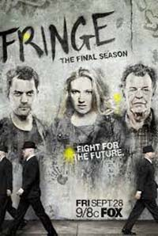
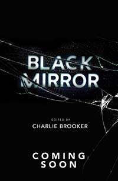
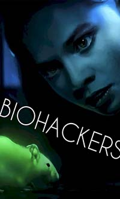

| Fringe |
2008 |
A agente especial do FBI Olivia Dunham é designada para a Divisão de Ciências Marginais do Birô para investigar crimes e ocorrências fora do normal. Ajudando Olivia em suas investigações está o cientista Walter Bishop, seu filho pau pra toda obra Peter e a agente júnior do FBI Astrid Farnsworth. |
 |
| Black Mirror |
2011 |
Contos de ficção científica que refletem o lado negro das telas e da tecnologia, mostrando que nem toda novidade traz só benefícios. |
 |
| Biohackers |
2020 |
Uma estudante de medicina entra na universidade com uma missão secreta: desvendar uma conspiração que liga uma tragédia familiar a uma professora de biologia visionária. Assista o quanto quiser. |
 |